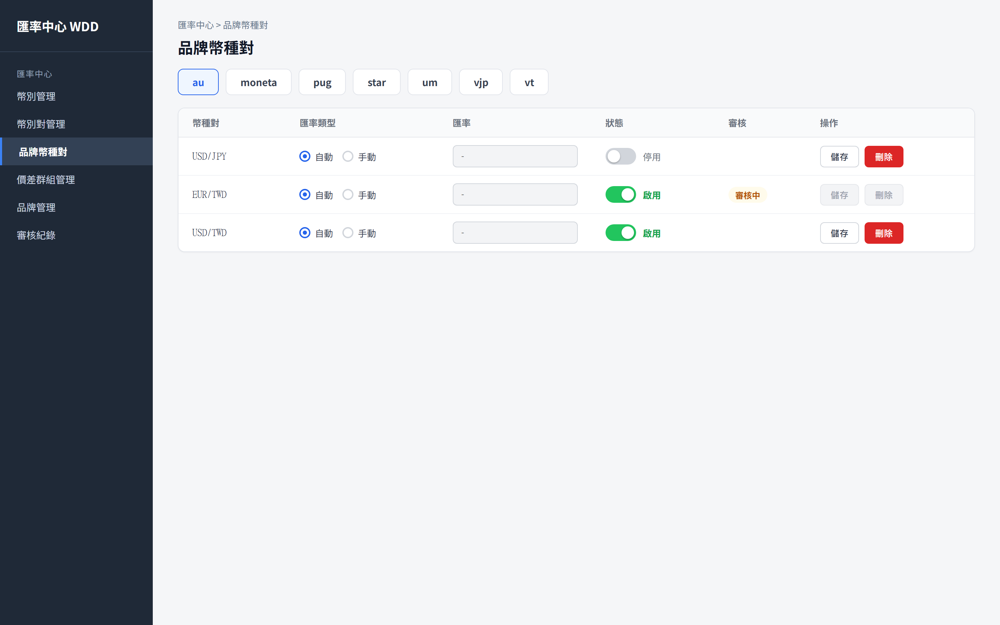
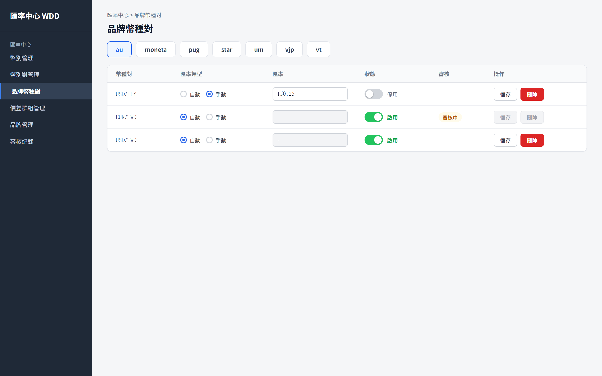
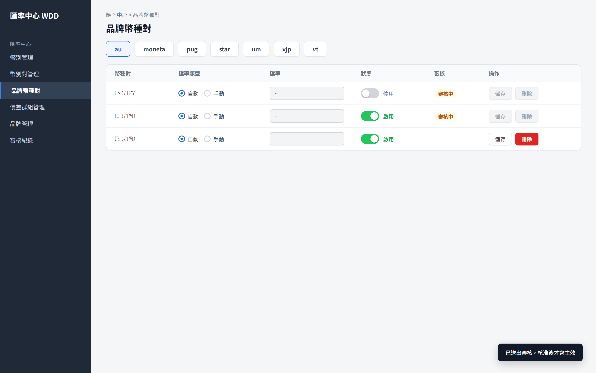
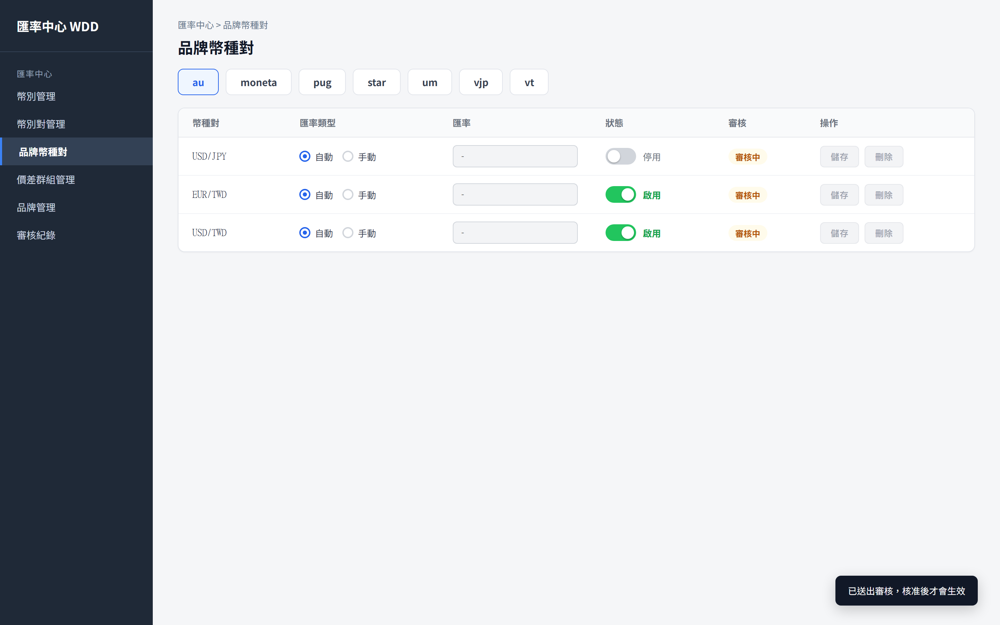
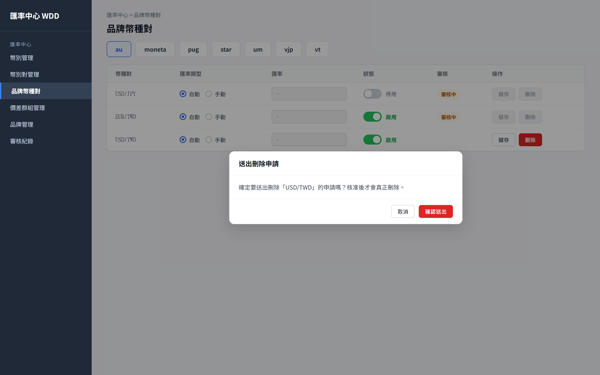

初始畫面：載入 au 的幣種對清單。EUR/TWD 已有待審核的變更，該列標記「審核中」且控制項停用；其餘列可正常操作。

將 USD/JPY 的匯率類型切為「手動」：匯率欄位轉為可輸入，填入 150.25，準備點擊該列的「儲存」。

點擊「儲存」：變更不會立即生效，而是送出審核申請。該列匯率仍維持原本的「自動」，並標記「審核中」，顯示提示「已送出審核，核准後才會生效」。

確認送出後：該列並未消失，而是留在畫面上標記「審核中」，等待審核人員核准後才會真正刪除。

對 USD/TWD 點擊「刪除」：確認視窗說明這是送出刪除申請，核准後才會真正刪除。